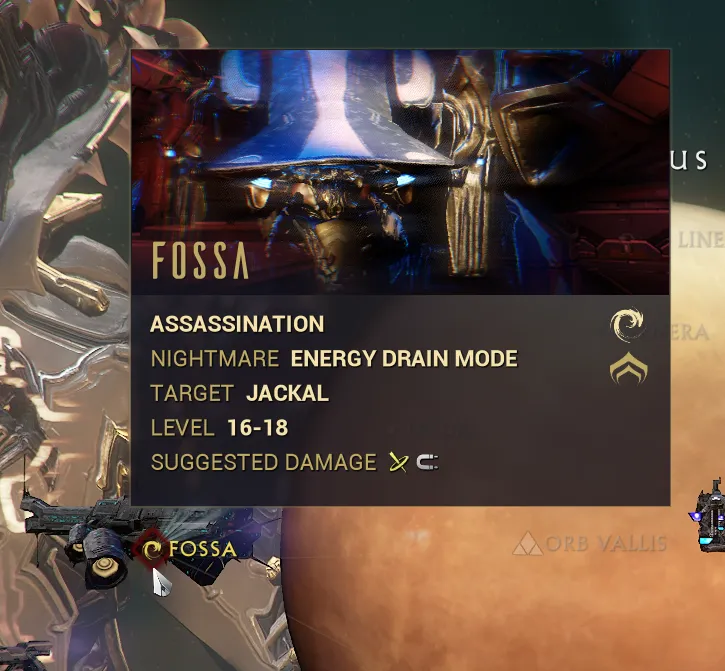
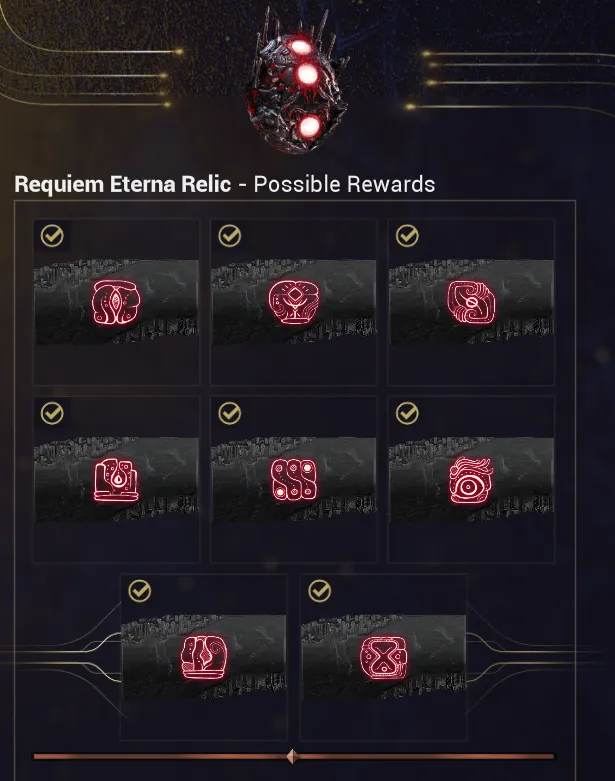

Platinum Farming
Table of Contents
Overview
Platinum is Warframe's main premium currency. It's used primarily for purchasing Warframe and weapon slots, cosmetics, and consumables like forma & orokin reactors/catalysts from the in-game market. While platinum can be bought directly, it can also be earned for 'free' through trading with other players.
This guide covers several reliable ways to earn platinum early on, before reaching the New War and Steel Path. This is not an exhaustive guide, but it focuses on methods that are accessible and practical for newer players.
I also strongly encourage using Warframe.market, a site built to make trading significantly easier. Check out my guide if you want help getting started with it!
Prime Parts / Prime Sets
Selling prime parts is one of the most accessible ways for new players to earn platinum. When you crack void relics, you can earn prime parts and blueprints that can be sold to other players.
Note: Prime parts and blueprints that you have crafted in the Foundry are not tradeable. Only the raw drops from relics can be sold.
Parts can be sold individually or as complete sets. As a rough baseline, non-vaulted parts tend to fall into these price ranges:
- Common Drops = 1-5 p
- Uncommon Drops = 6-10p
- Rare parts = 10-25p
Keep in mind the values above are estimates. Prices vary depending on the relic era and how recently the prime was released. Older non-vaulted primes are generally cheaper than newly released ones.
Selling full prime sets will take more effort since you'll need to collect every piece, but it will typically earn you a bit more than selling parts individually. Sets also reduce the number of trades you need to make, which matters early on when your daily trade limit is low.
{kind=link}
Example: At the time of writing, a full Yareli Prime set sells for around 60-65p. Selling her four pieces individually averages around 52p total (5p, 2p, 20p, and 25p per piece).
Ayatan Sculptures
Ayatan sculptures are decorative Orokin artifacts that can be sold to Maroo for Endo or sold to other players for platinum. They are a solid early option for earning plat and are fairly easy to come across.
Be sure to check Warframe.market for current prices, as values differ between sculpture types and whether they are filled with ayatan stars or unfilled.
There are several ways to obtain Ayatan sculptures including: - Finding one hidden randomly in a mission (roughly a 1 in 7 spawn chance) - Completing Maroo's Weekly Treasure Hunt mission - Completing the daily Sortie (28% chance for an Anasa sculpture) - Completing Arbitration missions
Note: Sorties and Arbitrations are not available to newer players until you progress further through the main quest line.
The most sought-after is the Anasa sculpture, which can sell for around 10p each when filled with stars. That said, any sculpture has value and is worth listing.
Nightmare Mods
Once you complete all nodes on a planet, you'll unlock that planet's Nightmare mission. Nightmare missions require you to clear the specific node again while under added debuffs. Clearing one rewards you with a Nightmare mod drawn from that planet's drop pool.
Some Nightmare mods are highly sought after due to their strong effects and low drop rates. Notable examples include Lethal Torrent, Shred, Blaze, and Hammer Shot, all of which can sell for a decent amount of plat early on. You can find a full list of Nightmare mods and their drop rates on the Warframe Wiki. As always, check Warframe.market for current prices before listing, since values vary quite a bit depending on the mod.
Note: New Nightmare missions become available roughly every 8 hours.
{kind=link}

Veiled Rivens
Riven mods are special weapon-specific mods originally designed to boost underused or niche weapons. For a deeper dive into Rivens, check out my Riven Guide.
On acquisition, Riven mods start out veiled. They can be sold veiled for a modest amount, or unveiled for potentially more plat. Unveiling is essentially a gamble though. You might land a Riven for a popular weapon like the Dual Toxocyst or Torid and 'hit it big', but more often than not you will end up with something unpopular and harder to sell. If you need plat quickly, selling veiled is the safer option.
Here are some average veiled Riven prices at the time of writing:
- Veiled Rifle = 10p
- Veiled Pistol = 5p
- Veiled Shotgun = 3-4p
- Veiled Melee = 5p
- Veiled Zaw = 1-2p
- Veiled Kitgun = 1-2p
- Veiled Companion = 40p
- Veiled Archgun = 15p
Note: Prices fluctuate based on market supply and can shift by ±5p or more. Always check Warframe.market before listing.
Syndicate Augments
Faction Syndicates are 6 organizations that you choose to align with to earn standing and unlock rewards. For a full breakdown, check out my Syndicate Guide.
As you climb ranks with a syndicate, you will unlock different rewards, including augment mods at Ranks 4 and 5. Each Warframe augment is exclusive to two specific syndicates, meaning most players will need to buy or trade for the ones outside their chosen factions. For example, Frost's augments are offered by Steel Meridian and Cephalon Suda, while Lavos' augments are offered by Red Veil and New Loka.
Each augment costs 25,000 standing and can typically be sold for 10-15p. Between daily standing, syndicate missions, and medallions, you should be able to purchase around two augment mods per day.
Requiem Relics and Requiem Mods
After completing The War Within, you'll gain access to the Kuva Fortress and its associated Kuva Siphon and Kuva Flood missions. These missions can be found on planets near the Kuva Fortress and reward Requiem Relics upon completion.
Requiem Relics are cracked by running Requiem Fissures, which function like standard Void Fissures but only appear on the Kuva Fortress. Cracking these relics drops Requiem mods, which are needed to defeat Kuva Liches and Sisters of Parvos. These mods are generally in demand and typically sell for ~10p each.
Note: A recent update (March 2026) made farming Requiem mods easier, so prices and demand are currently unstable. Check Warframe.market for the latest prices before listing.
{kind=link}
